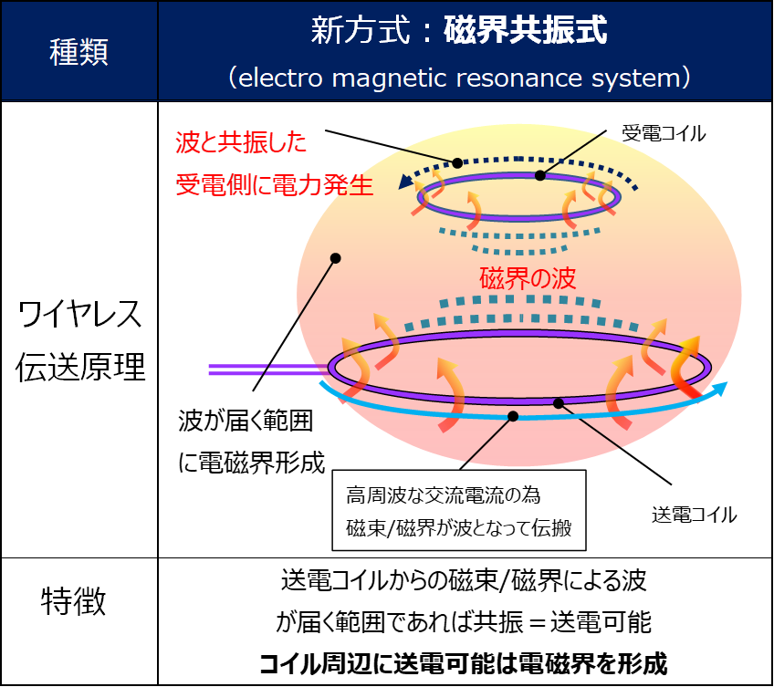
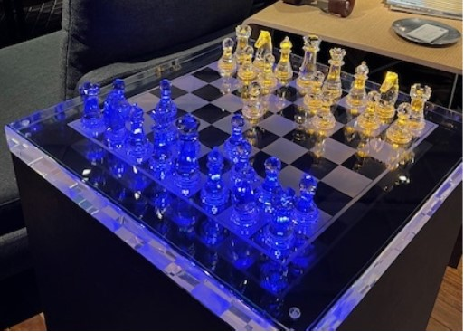
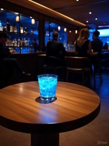

技術概要
磁界共振方式とは、送電側と受電側のコイルが同じ周波数で共鳴し、
空間を介してエネルギーを伝送するワイヤレス給電技術です。
電磁誘導方式と異なり、数センチ～数十センチの距離でも効率的に電力を伝送できます。

技術の特長
- 非接触・防塵構造：接点が不要なため、埃・水・油に強くメンテナンス性に優れる。
- 自由な設計：設置位置や形状の制約が少なく、製品デザインの自由度が高い。
- 安全性：？？？？磁界を利用するため、電波ノイズや金属干渉の影響が少ない。？？？？
展示デモ：「ワイヤレス発光スタンプ」
来場者がスタンプを押すと同時に、スタンプ内のLEDが光る体験デモを展示しています。 
電池を内蔵せず、スタンプ台の下に配置した送電コイルから磁界共振で給電しています。
直感的な体験を通じて、非接触エネルギー伝送の原理を体感していただけます。
同様の光るスタンプを大阪・関西万博2025の吉本興業パビリオンにて運用していました。
今後の応用展開
- バッテリー交換不要のセンサーデバイス
- 設置型家電製品への非接触給電
- 小型IoTデバイスおよびロボット機器への電力供給
- 配線工事が不要な照明システム
※本デモでは小規模な発光実験を行っていますが、より大容量の電力伝送 (マイクロ波給電) についても技術開発を行っています。
開発について
当社では自動車部品の開発・製造を主力事業としておりますが、「ワイヤレス給電技術」の実用化を目指した 開発にも取り組んでおります。

光るスタンプは、技術の理解促進を目的として製作いたしました。 実際に体験していただくことで、無線給電技術の可能性を感じていただければと思います。
事業提携・技術導入に関するお問い合わせ
本技術の事業化や製品への応用についてご興味をお持ちの企業様は、 以下のフォームよりお気軽にお問い合わせください。